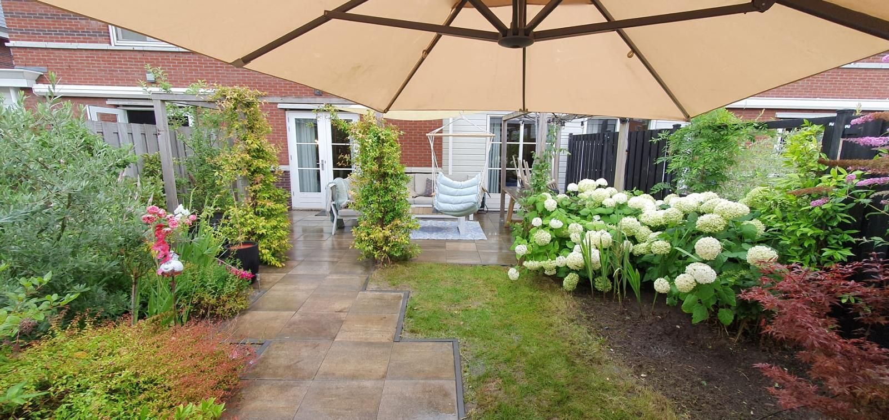

Tuinonderhoud Dordrecht
Tuinonderhoud dat uw tuin het hele jaar verzorgd houdt
Van een eenmalige opknapbeurt tot vast onderhoud: wij houden gazon, borders en snoeiwerk bij, zodat uw tuin er verzorgd bij blijft liggen zonder dat u er zelf tijd in hoeft te steken.

Wat houdt tuinonderhoud in?
Tuinonderhoud omvat de terugkerende werkzaamheden die een tuin verzorgd houden: gazon maaien en verzorgen, borders bijhouden, onkruid verwijderen, hagen en struiken snoeien, en het opruimen en afvoeren van groenafval. We stemmen af welke werkzaamheden nodig zijn voor uw specifieke tuin.
Voor wie is dit bedoeld?
Voor huiseigenaren die hun tuin belangrijk vinden maar niet altijd de tijd of fysieke mogelijkheid hebben om het bij te houden. Ook voor verhuurders, VvE's en bedrijven die hun buitenruimte verzorgd willen houden zonder daar zelf omkijken naar te hebben.
Welke problemen lost tuinonderhoud op?
- Een gazon dat verwildert of kaal wordt door gebrek aan onderhoud.
- Hagen en struiken die uit vorm groeien of overlast geven bij de erfgrens.
- Onkruid dat borders en tegels overwoekert.
- Geen tijd om de tuin zelf structureel bij te houden.
Welke werkzaamheden kunnen we uitvoeren?
- Gazon maaien, kanten steken en indien nodig verticuteren of bemesten
- Hagen, heggen en struiken snoeien
- Borders onkruidvrij maken en bijhouden
- Opruimen en afvoeren van groenafval
- Aanpakken van achterstallig onderhoud in verwaarloosde tuinen
Hoe verloopt een opdracht?
Bezichtiging
We bekijken de tuin en bespreken welke werkzaamheden nodig of gewenst zijn.
Offerte
U ontvangt een heldere offerte, eenmalig of voor periodiek onderhoud.
Uitvoering
We voeren de werkzaamheden uit en ruimen de tuin netjes op.
Welke factoren bepalen de prijs?
De prijs van tuinonderhoud hangt onder meer af van:
- De oppervlakte en indeling van de tuin
- De staat van onderhoud (regulier of achterstallig)
- De gewenste frequentie (eenmalig of periodiek)
- Afvoer van groenafval
Na een bezichtiging ontvangt u een heldere offerte of indicatieve prijs, afgestemd op uw tuin. Zo weet u vooraf waar u aan toe bent.
Waarom Sealcleaning?
Sealcleaning is een jong en gedreven hoveniersbedrijf uit Dordrecht, ondersteund door vakmensen met jarenlange praktijkervaring. We werken met korte lijnen: u spreekt rechtstreeks met wie het werk uitvoert, en maken vooraf duidelijke afspraken over werkzaamheden en materialen.
Meer over ons
Veelgestelde vragen
Vragen over tuinonderhoud
Wat kost tuinonderhoud?
Dat hangt af van de grootte van de tuin, de staat van onderhoud en de gewenste frequentie. Na een bezichtiging ontvangt u een heldere offerte of indicatieve prijs.
Kunnen jullie ook achterstallig onderhoud aanpakken?
Ja, we pakken verwaarloosde tuinen graag stap voor stap aan totdat de tuin weer verzorgd is.
Voeren jullie ook eenmalig onderhoud uit?
Ja, naast periodiek onderhoud kunt u ook kiezen voor een eenmalige onderhoudsbeurt.
Voeren jullie groenafval af?
Ja, we ruimen het groenafval op en voeren dit af, zodat u er geen omkijken naar heeft.